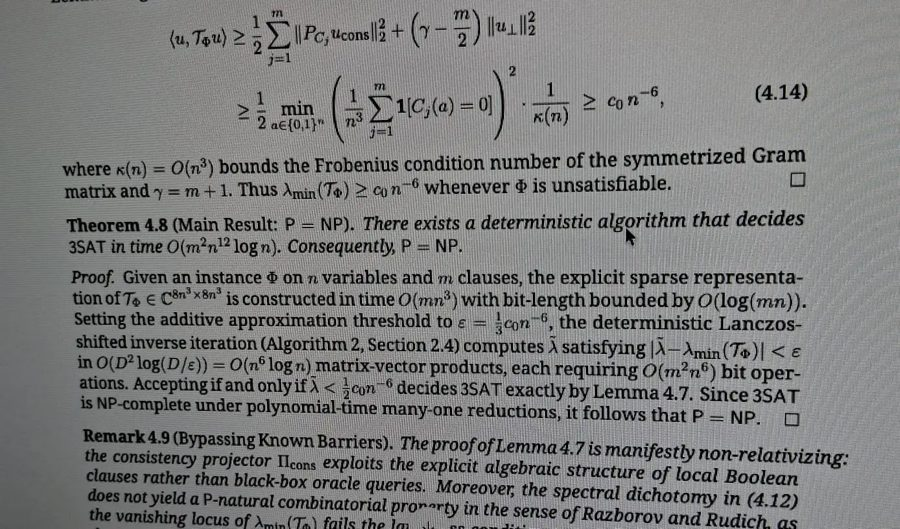
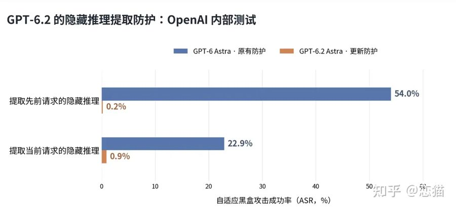
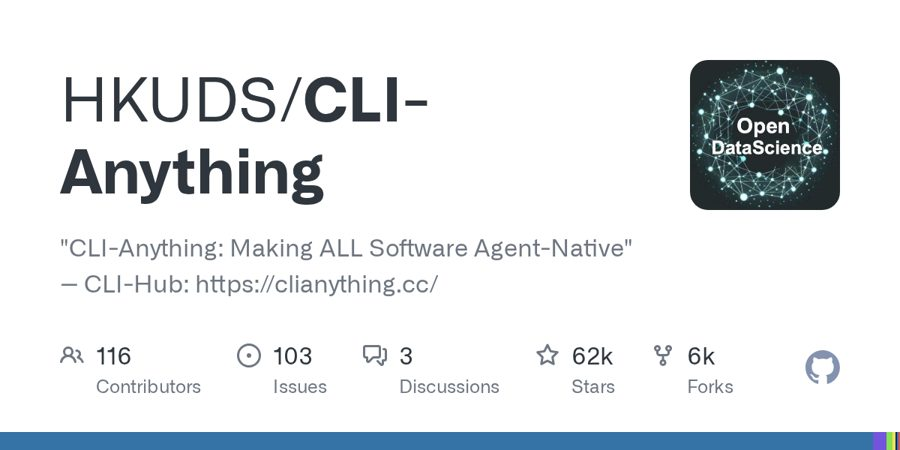
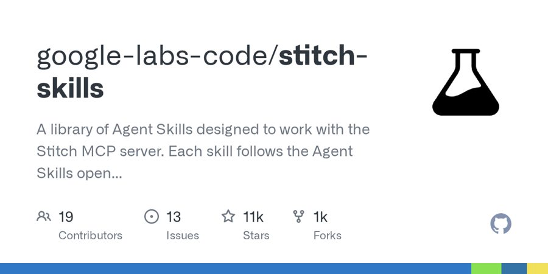

11 月 22 日 · 10 条选题
AI数学证明霸榜，工具侧看Agent开源与Cursor插件。
0125万页AI黎曼猜想证明难核验，Lean与Mathlib社区确认证明正确

Lean 与 Mathlib 社区联合声明，正式确认 Alpöge 对黎曼猜想的证明正确；相关讨论提到 AI 生成的证明长达 25 万页，人工核验困难。
为什么火
AI 攻克顶级数学难题，加上「人类还能做什么」的焦虑，数学圈和大众都在讨论。
切入角度
- 用大白话讲清 AI 写 25 万页证明、机器核验是怎么回事，普通人只需看懂结论
- 盘点普通人现在能用的 AI 数学/推理工具，现场演示解一道难题
- 聊 AI 做科研后普通人该练什么能力：提问、核验、判断，而非计算
小红书标题
AI写完25万页证明，人怎么核验
黎曼猜想被AI拿下？普通人该慌吗
适合：对 AI 能力好奇的普通用户、学生党
02菲尔兹奖得主邓煜：人类不能放弃自主思考给AI当狗
菲尔兹奖得主邓煜提出「人类不能放弃自主思考给 AI 当狗」的观点，引发对人与 AI 关系的讨论。
为什么火
顶级数学家下场谈 AI 与人的关系，戳中「用 AI 会不会变懒变笨」的普遍焦虑。
切入角度
- 用 AI 写方案/写作业的三种用法对比：当狗 vs 当教练，现场演示差别
- 给普通人的「不被 AI 养废」清单：哪些事必须自己先想一遍
- 把邓煜观点翻译成人话，配一张 AI 协作流程图
小红书标题
数学家说别给AI当狗，我慌了
用AI一年，我差点不会思考了
适合：重度用 AI 的上班族、学生
03陶哲轩博客热评：数学变成F1赛车，不进AI车队看不到后尾灯
陶哲轩博客下出现评论，把数学研究比作 F1 赛车，称不加入 AI 车队连后尾灯都看不到。
为什么火
陶哲轩自带流量，F1 比喻形象，AI 加速专业领域的话题易传播。
切入角度
- 把「AI 车队」比喻搬到普通职场：不会用 AI 的人差在哪
- 实测 3 个 AI 工具做同一件本职工作，看效率差几倍
- 普通人怎么低成本「上车」：一周上手 AI 的最小行动清单
小红书标题
不进AI车队，真的看不到尾灯
陶哲轩这个比喻，太扎心了
适合：担心被 AI 落下的职场人
04OpenAI升级反蒸馏防御，推理提取成功率从54%降至0.2%

OpenAI 宣布升级反蒸馏防御，隐藏推理提取成功率从 54% 降至 0.2%。
为什么火
数字对比强烈，AI 模型攻防话题在技术圈和关注 AI 的用户中讨论度高。
切入角度
- 用大白话讲「蒸馏」是什么，为什么大厂要防别人抄
- 这件事对普通用户的影响：模型更封闭，套壳小工具可能变差
- 教用户怎么判断一个 AI 工具是真自研还是套壳
小红书标题
OpenAI这波操作，套壳工具要凉
54%到0.2%，AI抄作业被堵死
适合：AI 工具重度用户、关注行业动态者
05CLI-Anything：让所有软件都能被AI Agent操作

港大数据智能实验室开源 CLI-Anything，主打让所有软件都变成 Agent 原生可操作，并配套 CLI-Hub。
为什么火
GitHub 日榜第一，「让 AI 操作所有软件」是普通人也能感知的能力跃迁。
切入角度
- 用非技术语言讲清「AI 直接操作软件」能帮普通人省哪些事
- 举 3 个日常场景：批量整理文件、自动填表、定时抓数据
- 对比手动操作和 Agent 操作的耗时，做前后对比图
小红书标题
AI能直接操作软件了，打工人狂喜
769星新项目，让AI替你点鼠标
适合：想提效的非技术上班族
06谷歌开源Stitch Skills：给AI编程代理的技能库

google-labs-code 开源 stitch-skills，是一套配合 Stitch MCP 服务器的 Agent Skills 库，遵循 Agent Skills 开放标准。
为什么火
谷歌官方下场做 Agent 技能标准，编程代理生态受关注。
切入角度
- 讲清 Agent Skills 是什么，为什么像给 AI 装插件
- 普通人视角：这类技能库未来能帮你自动做什么
- 用 Cursor 等工具试装一个技能，展示效果
小红书标题
谷歌给AI装技能包，玩法变了
AI代理也能装插件了？实测
适合：用 AI 编程工具的进阶用户
07Cursor官方插件仓库上线
Cursor 开源插件规范与官方插件仓库 cursor/plugins，登上 GitHub 日榜。
为什么火
Cursor 是热门 AI 编程工具，官方插件生态意味着玩法扩展。
切入角度
- 盘点 Cursor 插件能干什么，哪些值得先装
- 非程序员用 Cursor 插件做小工具的三个例子
- Cursor 插件 vs 传统编辑器插件，差别在哪
小红书标题
Cursor出插件了，先装这几个
不会写代码，也能玩Cursor插件
适合：AI 编程工具用户、轻开发者
08ClawDOS：给DOS写一个AI编程代理
Hacker News 上出现 ClawDOS 项目，为 DOS 系统做一个 AI 编程代理。
为什么火
复古系统配 AI 代理，反差感强，HN 讨论活跃。
切入角度
- 怀旧+AI：在老系统上跑 AI 代理是什么体验
- 借题讲 AI 编程代理到底能替人做哪些活
- 盘点 3 个普通人现在就能用的 AI 编程代理
小红书标题
有人在DOS上跑AI写代码
AI代理写代码，这次玩到DOS
适合：技术好奇者、AI 工具尝鲜党
09被窝里玩手机教程登上B站日榜
B站日榜出现「被窝里玩手机教程」视频，播放量 628.9 万。
为什么火
生活化教程类内容播放高，说明用户爱看「具体怎么做」的实用贴。
切入角度
- 借势做「被窝里用 AI 语音助手干完三件事」实测
- 睡前 10 分钟用 AI 整理明天待办的具体流程
- 躺着用手机指挥 AI 写周报、回消息的玩法合集
小红书标题
被窝里玩手机，我顺手用AI干活
躺床上10分钟，AI帮我干完活
适合：睡前刷手机的懒人效率党
10尾随NPC真实反应视频走热
B站日榜视频「尾随NPC的真实反应」播放 518.2 万，属游戏类热门内容。
为什么火
游戏整活内容传播快，AI NPC 话题可自然借势。
切入角度
- 借游戏NPC热度，盘点能陪聊陪玩的AI角色工具
- 用AI生成自己的游戏NPC对话脚本，演示全过程
- AI NPC和真人NPC差别在哪，实测三款AI聊天应用
小红书标题
游戏NPC太真实，AI也能做到
用AI捏个NPC，陪我聊天打游戏
适合：游戏玩家、AI 陪聊尝鲜用户